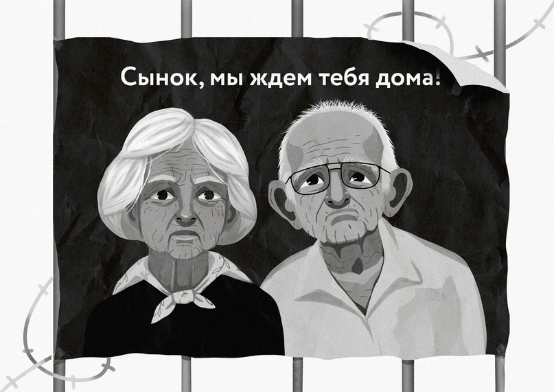
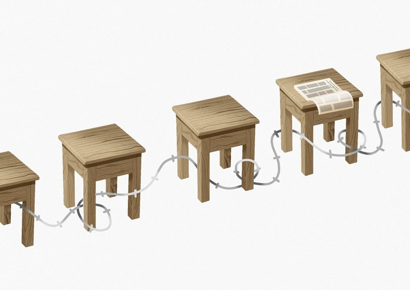

«Девочки», бдящие за соблюдением режима содержания, и чреватые попытки их впечатлить
— Работать будешь?
— Где? — спрашиваю.
— Ты мне вопросом на вопрос не отвечай! Вот ты, — тут он указывает на меня пальцем, — пидор или еврей?

Зашкаливающая глупость всего того, что я видел за два года отсидки, постепенно выработала иммунитет к ситуациям, которые раньше могли бы показаться возмутительно тупыми. Вот и сейчас я, осужденный на какой-то солженицынский срок, стою в кабинете начальника карантина исправительной колонии №7 и думаю о том, что нужно отвечать на этот нелепый вопрос.
Начальник карантина — тучный мужчина с обычным для работника УФСИН похмельным лицом. Он сидит за большим столом и смотрит на меня маленькими хитрыми глазенками. За его спиной висит большой стенд с фотографией семейной пары — старушки и деда. Снимок черно-белый. Сильная резкость, чтобы отчетливее виднелась паутина морщин на старческих лицах. Их глаза немного блестят от слез — пенсионеры смотрят на тебя с затаенной надеждой. Над фотографией большими буквами написано: «Сынок, мы ждем тебя дома!» Глядя на это, я вспомнил советскую методичку — агитационная работа должна быть конкретной.
— Ни то ни другое, — говорю.
— Вот и славно. Учти, волынить никому не дам. И еще — долбоеб в зоне один. И это я. Если таких будет двое, получится уже слишком много. Станет не лагерь, а что? — я секунду стоял в замешательстве, так и не успев ответить. — Правильно, дурдом! — он произнес слово «дур-дом» с длинной паузой между слогами.
— Понятно, — отвечаю.
— Гражданин начальник.
— Понятно, гражданин начальник.
— Иди в комнату ПВР, осужденный.
Карантин — небольшое здание на территории лагеря, огороженное со всех сторон высоким забором с неизбежной колючей проволокой. Повсюду камеры — в коридоре, раздевалке, кухне, спальном помещении, умывальнике и пэвээрке. Когда наш этап из десяти человек приехал в колонию, на обыске изъяли все «вольные» вещи — джинсы, куртки, кроссовки и слишком яркую одежду. Мне удалось оставить кое-что, незаметно для остальных сунув в руку менту пачку хороших сигарет, которая через секунду пропала у него в рукаве, будто он подрабатывал фокусником.
— Если засветишься в вольных тряпках под камерами в карантине, то меня выебут. А если выебут меня, я выебу тебя.
Звучало не слишком красноречиво, но вполне доходчиво.
Спальное помещение было открыто с десяти вечера до шести утра, а в остальное время закрывалось на ключ. Часто на дверь поглядывали с тоской — в тюрьмах привыкли спать днем, а бодрствовать ночью.
Кухней зэки называют любую комнату или место, где стоит стол. Можно сказать, что именно стол делает помещение кухней. В исправительных учреждениях и тюрьмах у него просто нет других функций — тут едят. Надеюсь, эти установки не засядут в моей голове настолько, что в будущем придется заниматься сексом именно на столе, доказывая себе самому, что я дома, на свободе. Разумеется, никаких холодильников, чайников или хотя бы шкафчиков для посуды не было.
В сравнении со скудным интерьером всех помещений, комната ПВР (что-то там воспитательной работы) была целым парком развлечений. Взгляд мог отдохнуть на экране телевизора, где неожиданно был включен MTV. Нарды, шахматы, прошлогодние газеты и старые журналы смутной тематики. Большую часть комнаты занимали шестнадцать табуреток, намертво прикрученных к полу, — они стояли прямо посередине идеальным квадратом, напоминая военное построение.
Практически весь день мы проводили в пэвээрке. Однажды я заснул, сидя на корточках и прислонившись спиной к стене, — через несколько минут прибежал сотрудник и, указав на камеру, сказал:
— Осужденный, спать в неустановленное время запрещено.
Видимо, именно по этой причине табуретки были прикручены к полу так далеко от стен — вздремнуть без опоры крайне трудно, однако, как выяснилось через несколько дней, осуществимо.

Однажды в моей голове созрел план: я сяду спиной к камере, положу на табурет перед собой журнал и попробую поспать сидя. Однако через пятнадцать минут появился мент:
— Осужденный, девочки просили передать, чтобы ты хоть журнал перелистывал.
Вот же суки, подумал я. Оказалось, наблюдают за соблюдением режима содержания женщины. Девочками их можно назвать с большой натяжкой — они все взрослые и полные из-за сидячего образа жизни и бутербродов, которые постоянно передают зэки — полномочия «девочек» распространяются не только на карантин, но и на камеры по всей колонии. Проголодавшись, женщина смотрит на мониторы пристальнее и, заметив маленькое нарушение (например, если заключенный стоит на улице в шортах), говорит по громкоговорителю:
— Второй сектор, второй сектор, осужденный Васин, на вас будет составлен рапорт за нарушение формы одежды.
Чаще всего какой-нибудь Васин не хочет в карцер, в особенности за такой мелкий проступок, поэтому всевидящему существу, голос которого раздается над зоной, преподносят дары: шоколадки, печенье, колбасу, консервы…
Но тогда я не знал всех подробностей, поэтому чистосердечно представил девочек. Сук, но все же девочек.
Сложно сказать, чем были мотивированы мои ответные действия. По крайней мере, тогда это показалось очень смешным. Я побрился, помыл голову и вышел из умывальника, опоясанный полотенцем. Уже по дороге в раздевалку я слышал, как по громкоговорителю кричали:
— Карантин, карантин, осужденный, приведите в порядок свой внешний вид, надев одежду установленного образца!
Все еще по пути:
— Карантин, карантин, осужденный, нас вас будет составлен рапорт, если вы не оденетесь!
Я зашел в раздевалку. Встал напротив камеры. Резким движением сорвал полотенце, как бывалый стриптизер. Ненатурально медленно начал вытираться.
Громкоговоритель замолк.
В течение двух недель после того, как на осужденного был составлен рапорт, в один из дней собирается так называемая комиссия. Нечто вроде суда, но в качестве судей выступают сотрудники администрации — они выносят коллективное решение, наказать ли зека карцером или ограничиться устным выговором. Участвуют в приговоре в среднем человек десять — начальник колонии, начальник оперативного отдела, начальник отдела безопасности и так далее. Все обвинения, выдвинутые против осужденного, должны быть зафиксированы на фото или видео (рядовые сотрудники ходят с видеорегистраторами на груди) — соответственно, вопрос невиновности отпадает, уступая вопросу тяжести наказания.
Моя первая комиссия собиралась через неделю после описанного случая с полотенцем. Я зашел в большое помещение, закрыл дверь и представился:
— Осужденный Mr.Nobody, статья …, срок — … строгого режима. На дисциплинарную комиссию прибыл.
Справа от меня — начальник карантина. Я его даже не узнал: краснота с лица и шеи будто перешла на нос (он был почти лиловым), опрятно одет, постоянная щетина отсутствует. Он напоминал труп, который привели в порядок перед похоронами — поблекший взгляд только подтверждал мое сравнение.
Само помещение было похоже на школьный класс, только за партами сидели менты.
Начальник карантина откашлялся и начал зачитывать мое нарушение:
— Четырнадцатого июля в 19:25 осужденный Mr.Nobody, находясь в карантине, вышел из умывальника в одном полотенце — то есть не соблюдая установленную форму одежды. Более того, по громкоговорителю было объявлено о нарушении. Сотрудница потребовала, чтобы осужденный привел в порядок свой внешний вид, но и это было проигнорировано. После чего был составлен рапорт.

Тут заговорил другой мент с большими звездами на погонах:
— Осужденный, почему вы не отреагировали на предупреждение?
Я и ответить не успел, как начальник отдела начал нагнетать:
— Более того, Mr.Nobody прошел в раздевалку, где демонстративно, — тут он сделал паузу, обведя взглядом всех присутствующих, как бы давая время осознать насколько демонстративно, — пришел в неприглядный вид прямо, так сказать, на глазах у Тамары Николаевны…
В комнате послышалась пара смешков.
Он продолжил:
— Вот, полюбуйтесь, — тут начальник карантина достал из своей папки лист А4 и передал другому члену комиссии.
Через минуту доказательства нарушения дошли и до моих рук. Это был коллаж из четырех черно-белых фотографий. На первом снимке я выходил из умывальника, придерживая полотенце на бедрах. Второе фото — в коридоре, вид со спины. Третье было самым удачным — я стою в раздевалке, голый и, как говорится, руки в боки. Вызывающий взгляд прямо в камеру. На последней фотографии моя поза выглядела менее атлетично — я вытирал спину, зачем-то задрав ногу. В общем, снимки выглядели потешно, даже несмотря на то что интимные зоны были замазаны в Paint’е.
Мент с большими звездами (позже я узнал, что он — начальник колонии) сказал:
— Ну давайте выслушаем мнение начальника оперотдела.
Последний подорвался со своего стула — парта, за которой он сидел, чуть не рухнула. Выглядело это так, будто он задремал и его разбудили на самом приятном эпизоде сна. Видимо, поэтому начальник оперотдела говорил слегка обиженно:
— Я, прямо скажем, не в восторге от этого осужденного. К примеру, внешний вид опрятный, а вот внутренний облик…
Хозяин (в лагерном жаргоне устоялось это унизительное слово) колонии прервал поток рассуждений:
— Мы не готовы слушать так долго, Алексей Константинович.
Опер заторопился:
— Да-да, я только хотел сказать кратко, ведь краткость, как известно, дороже золота… Осужденный устраивает всяческие дезорганизации, иронизирует, хамит…
— Достаточно. Карцер, 10 суток, — сказал начальник.